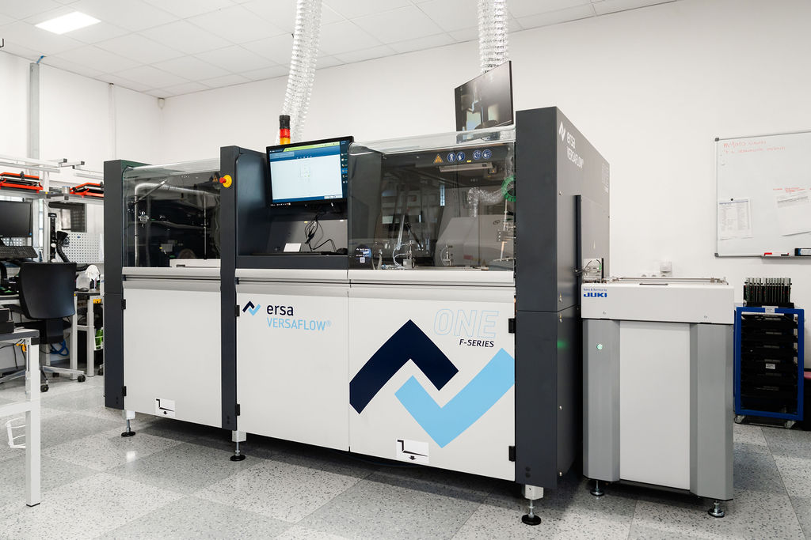

ERSA VERSAFLOW ONE
Deska již obsahuje SMT kondenzátory C3 a C4 zapájené při předchozí operaci reflow.
Nyní je potřeba zapájet THT vývody na BOTTOM straně.
Méně než 2 sekundy:
kulička cínu.
2 až 5 sekund:
správný spoj.
Více než 5 sekund:
přehřátý spoj.
DPS – strana BOTTOM
Drž prst na kovovém vývodu. Při správném pájení se ploška změní na stříbrnou.

Nezapájeno
Kulička
Správný spoj
Přehřátí